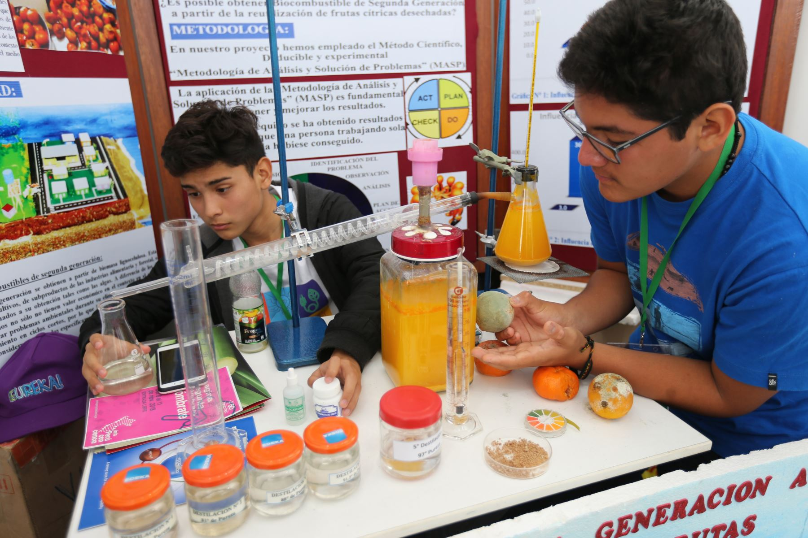
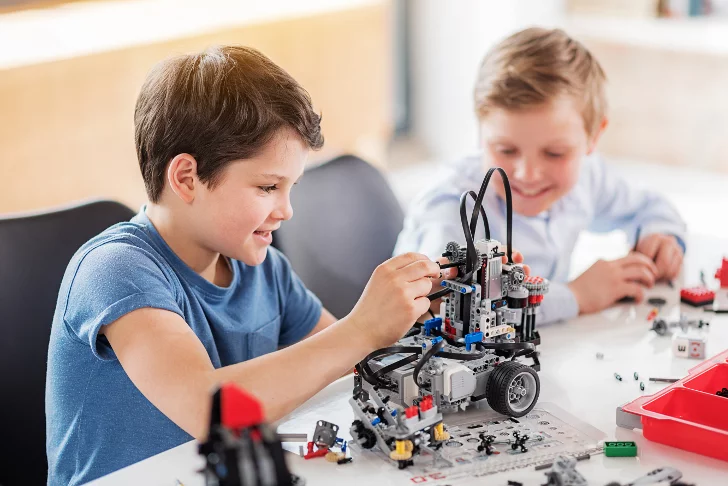
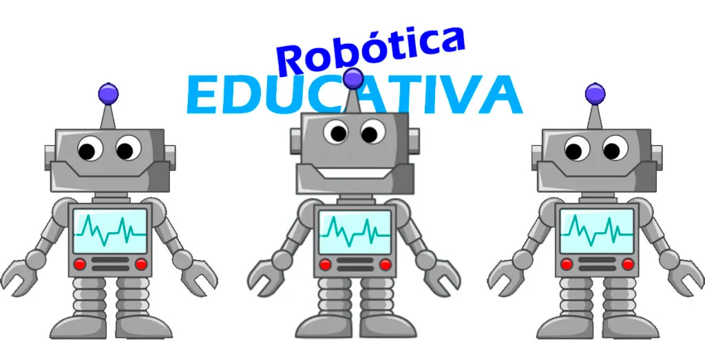

Feria Científica 2025: Innovación y Creatividad

El pasado viernes, nuestros estudiantes de secundaria presentaron proyectos innovadores en la Feria Científica Anual, demostrando su talento en áreas como robótica, biotecnología y energías renovables.
Proyectos Destacados
- Robot controlado por IA para reciclaje.
- Biodigestor casero para generar energía.
- App para monitorear la calidad del aire.
"Esta feria refleja el compromiso de nuestro colegio con la educación STEM y el desarrollo sostenible." — Directora María López

(En esta imagen los estudiantes explican lo elaborado)

En esta imagen los estudiantes explican lo elaborado
Comentarios (3)
Claudia Mendoza
¡Felicitaciones a todos los participantes! Mi hijo aprendió mucho con su proyecto.